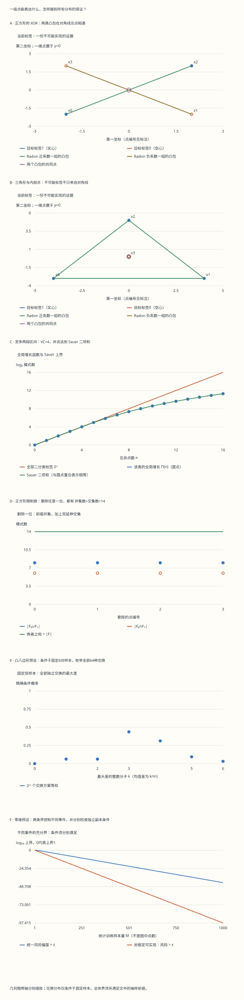

本页目录
统计学习 II · VC 维、Sauer 引理与学习论基本定理
前置：slt-01 的 PAC 量词、风险与并集界；有限集合的计数、二项式系数和独立随机变量。目标：能区分一个点集与所有点集，完整证明 Sauer 引理，并把有限行为计数接到有明确条件的泛化界。
1. 一张画不出的图，够不够证明一个定理？
把正方形的对角顶点涂成同一种颜色。
四个点按环绕顺序编号为 \(x_0,x_1,x_2,x_3\)，标签依次为 \(1,0,1,0\)。能否画一条直线，使所有标签 \(1\) 在一侧、标签 \(0\) 在另一侧？两条对角线相交，所以两类点的凸包相交；严格分离它们不可能。
这说明这个正方形不能被直线打散。它还没有证明“任何四点都不能被直线打散”：也许另一种位置安排可以做到。VC 维最容易被图片误导的地方，就是把一个配置上的失败误读成全称结论。
反过来，三个不共线点的每一种二元标签，都能用一条直线分开。这里要做的是把八种标签全部实现，不能只展示一张好看的分割图。本页实验对每种标签都给出可核对的见证或不可能证据，随后再证明任意四点的上界。
先预测再操作：正方形一共有 \(16\) 种标签；你认为只有两种对角交替标签失败，还是还会有别的失败？再把配置改成共线三点，观察“本配置最多能打散多少点”和“平面半空间类的 VC 维”是否一起变化。
无脚本对照：六份完整记录保存每个标签的见证或障碍、全部子集、全部删除坐标与全部随机交换。

| 预设 | n | 限制数 | 局部维数 | 全局VC | 当前标签可实现 | 选定删除的并集+交集 | 条件交换尾概率 |
|---|---|---|---|---|---|---|---|
| square-xor | 4 | 14 | 3 | 3 | 否 | 8 + 6 = 14 | 0.75 |
| inside | 4 | 14 | 3 | 3 | 否 | 8 + 6 = 14 | 0.75 |
| collinear | 3 | 6 | 2 | 3 | 否 | 4 + 2 = 6 | 0.5 |
| convex-eight | 8 | 58 | 3 | 3 | 否 | 44 + 14 = 58 | 0.9375 |
| two-intervals | 6 | 57 | 4 | 4 | 否 | 31 + 26 = 57 | 1 |
| zero-dimension | 1 | 1 | 0 | 0 | 否 | 1 + 0 = 1 | 0 |
下载六份完整记录。整数分离系数、严格间隔、Radon 仿射系数与交点、每个限制集合和交换符号均可逐项复核；统计界的小数是显示近似，其适用条件另外保存。
2. 三个不同的对象：限制族、增长函数、VC 维
固定一个非空二分类假设类 \(\mathcal H\subseteq\{0,1\}^{\mathcal X}\)。对互异点集 \(S=\{x_1,\ldots,x_n\}\)，限制族为 \(\mathcal H|_S=\{(h(x_1),\ldots,h(x_n)):h\in\mathcal H\}\)。不同函数可以产生同一张有限真值表；限制族只算不同的真值表。
若 \(|\mathcal H|_S|=2^n\)，称 \(S\) 被打散。它的量词是：对每一种标签，允许另外选择一个假设。它不要求同一个假设同时产生互相矛盾的标签。
增长函数为 \(\Pi_{\mathcal H}(n)=\sup_{|S|=n}|\mathcal H|_S|\)；它再对所有点集取最大可能值。本页五个类的输入域都是无限的，任意有限 \(n\) 都能选到互异点。若输入域有限，须限制 \(n\le|\mathcal X|\)，或另外说明允许重复输入的约定。
VC 维为 \(d=\sup\{|S|:S\text{ 被 }\mathcal H\text{ 打散}\}\)。证明 \(d=k\) 分为两个方向：
- 下界：找到一个 \(k\) 点集，并实现它的全部 \(2^k\) 种标签。
- 上界：对任意 \(k+1\) 点集，找到至少一种不能实现的标签。不同点集可以有不同的失败标签。
实验还显示一个局部量：当前点集所有子集中，被打散子集的最大大小。共线三点的局部值是 \(2\)；允许在整个平面选点时，半空间类的全局值仍是 \(3\)。局部量由有限枚举验证，全局量由下面的证明支撑。
3. 一维例子：零维、阈值、区间与两段区间
只有常零函数的类 \(\{h\equiv0\}\)，在任何点集上只有一种标签，不能打散单点，所以 \(d=0\)。更一般地，非空类若 \(d=0\)，每一个输入位置的标签都必须在全类中一致，否则该点就被打散了。因此它在任何有限点集上的限制数都是 \(1\)。零维不等于零个假设或零个限制模式。
对单向阈值 \(h_t(x)=\mathbf1\{x\ge t\}\)，按 \(x_1<\cdots<x_n\) 排序后，标签只能是若干个 \(0\) 接若干个 \(1\)，一共 \(n+1\) 种。单点两种标签都能实现；任意两点上的 \(1,0\) 不能实现，故 \(d=1\)。
单区间类 \(h_{a,b}(x)=\mathbf1\{a\le x\le b\}\) 的正标签至多形成一段。两点的四种标签都可实现；任意有序三点上的 \(1,0,1\) 不可实现，故 \(d=2\)。空标签可以把区间放在所有实验点之外实现。
至多两段区间的类，同理有 \(d=4\)：四点上任意标签最多有两段正标签；五点的 \(1,0,1,0,1\) 要三段，不能实现。对 \(n\) 个有序点，恰有 \(j\) 段正标签的模式数是 \(\binom{n+1}{2j}\)：从点间及两端的 \(n+1\) 个空隙中选出 \(2j\) 个端点空隙。
因此单区间的增长函数为 \(1+\binom{n+1}{2}\)，至多两段区间的为 \(1+\binom{n+1}{2}+\binom{n+1}{4}\)。利用 Pascal 恒等式，后者等于 \(\sum_{j=0}^{4}\binom nj\)；前者等于 \(\sum_{j=0}^{2}\binom nj\)。约定 \(j>n\) 时 \(\binom nj=0\)。这些类稍后会恰好达到 Sauer 上界。
实验给一维见证使用半整数端点，避免点落在边界上。例如有序位置 \(0,1,2\) 的标签 \(0,1,0\)，可以用区间 \([1/2,3/2]\)。记录保存端点的两倍，便于用整数核对。
4. 平面半空间：三个点的见证与任意四点的反证
平面仿射半空间为 \(h_{w,b}(x)=\mathbf1\{w^\top x+b\ge0\}\)。对有限点集，可以等价地研究严格分离：若已有一个满足该分类约定的分类器，负类的分数严格小于零；稍微增大 \(b\)，就能把落在边界上的正类移到严格正侧，同时保留全部负类。只有一个类别时，常数分数 \(\pm1\) 即可。
三个不共线点的增广向量 \((1,x_i^{(1)},x_i^{(2)})\) 线性无关。给定任意标签，把目标分数设为 \(s_i=2y_i-1\)，解三元线性方程 \(b+w^\top x_i=s_i\)。系数矩阵可逆，因而每一种标签都有严格分离解，证明 \(d\ge3\)。
现在任取四个平面点。四个增广向量必线性相关，所以存在不全为零的实数 \(\alpha_i\)，满足 \(\sum_i\alpha_i=0\) 及 \(\sum_i\alpha_i x_i=0\)。正系数和负系数必同时出现。令 \(A=\{i:\alpha_i>0\}\)、\(B=\{i:\alpha_i<0\}\)、\(c=\sum_{i\in A}\alpha_i>0\)，则
两边分别是两组点的凸组合，所以凸包有共同点。把 \(A\) 标成 \(1\)、\(B\) 标成 \(0\)，零系数的点任意标记。若存在严格分离函数，它在左边凸组合上的值应为正，在右边应为负；同一个点不可能同时满足两者。故任意四点都有失败标签，\(d\le3\)，合起来得到 \(d=3\)。
这就是平面情况下的 Radon 划分。共线三点也可能已有仿射依赖；证明从未要求四点必须构成凸四边形。三角形包住第四点时，一组可以只有内部那一个点，另一组是外部三个顶点。
实验全部使用整数坐标。可实现标签附整数系数 \((w_x,w_y,b)\) 及逐点严格间隔；不可实现标签附整数 \(\alpha\) 和两个凸包的共同点。枚举分离线时，算法按投影次序改变的临界方向划分方向区域，在每个区域内部取方向，再枚举相邻投影之间的阈值。这里的“不可能”最终由凸包证据支持，不以有限角度扫描没找到直线作为证明。
5. Sauer 引理：删除一个坐标后，为什么还要加交集？
把一个 \(n\) 点集上的限制族记为 \(F\subseteq\{0,1\}^n\)。按最后一位是 \(0\) 还是 \(1\)，删去该位后得到 \(F_0,F_1\subseteq\{0,1\}^{n-1}\)。同一个前缀若有两种延伸，就同时属于两者。
令 \(U=F_0\cup F_1\)、\(I=F_0\cap F_1\)。由容斥，\(|F|=|F_0|+|F_1|=|U|+|I|\)。并集算出现过的前缀，交集补回有两种末位的前缀。 实验可更换删除位置，逐项查看这些集合，而非只比较两个总数。
若 \(F\) 的 VC 维至多 \(d\)，那么 \(U\) 的 VC 维也至多 \(d\)：它打散的前缀坐标在原族中仍被打散。更关键的是，\(I\) 的 VC 维至多 \(d-1\)。若 \(I\) 打散了 \(d\) 个前缀坐标，每一种相应前缀都同时有末位 \(0\)、\(1\) 两种延伸，于是 \(F\) 打散这 \(d\) 个坐标加最后一个，共 \(d+1\) 个，矛盾。
设 \(B(n,d)=\sum_{j=0}^{d}\binom nj\)，超出范围的二项项取零。对 \(1\le d<n\)，Pascal 恒等式给出 \(B(n,d)=B(n-1,d)+B(n-1,d-1)\)。结合上面的删除分解，归纳得到
归纳边界必须明确：非空零维族只有一个模式；\(d\ge n\) 时用平凡界 \(2^n\)；空族有零个模式，若为递推方便给它记 VC 维 \(-1\)，对应上界记为零。这只是空族的记号约定，不能与非空零维族混淆。
对 \(1\le d\le n\)，还有较简洁的 \(B(n,d)\le(en/d)^d\)。证明令 \(t=d/n\le1\)，则 \(t^d B(n,d)\le\sum_{j=0}^{d}\binom njt^j\le(1+t)^n\le e^{nt}=e^d\)，再除以 \(t^d\)。第一步用了 \(j\le d\) 时 \(t^j\ge t^d\)。\(d=0\) 时直接用 \(1\)，不要把零塞进分母。
6. VC 维给上界，但不总能给出精确增长函数
平面半空间的全局增长函数，在 \(n\ge1\) 时为 \(\Pi(n)=n(n-1)+2\)，而 \(\Pi(0)=1\)。例如五点最多实现 \(22\) 种标签；VC 维 \(3\) 给出的 Sauer 界为 \(1+5+10+10=26\)。Sauer 是通用于所有同维类的保证，不是每个类都取等号。
这里的精确公式来自一般位置的超平面计数。把仿射点提升为 \(v_i=(1,x_i)\in\mathbb R^3\)；参数向量 \(\theta=(b,w)\) 的空间被中心超平面 \(\theta^\top v_i=0\) 分区，每个开区域对应一种严格符号模式。一般维数 \(q\) 中，加入第 \(n\) 个超平面时，新区域数等于旧排列在该超平面上切出的区域数，所以 \(C(n,q)=C(n-1,q)+C(n-1,q-1)\)。一般位置保证限制排列仍处于相应的一般位置。
边界 \(C(1,q)=2\)、\(C(n,1)=2\) 配合 Pascal 恒等式给出 \(C(n,q)=2\sum_{j=0}^{q-1}\binom{n-1}{j}\)。取 \(q=3\) 就是 \(n(n-1)+2\)。对平面仿射点，一般位置是任意三点不共线；抛物线上互异点满足这一条件。
退化配置不会超过这个数：每个已实现标签都有严格分离器；有限种标签的正间隔可以同时在足够小的点扰动下保留，再把点扰动到一般位置。因此退化配置的标签模式不会比一般位置更多。实验中的八个抛物线点有 \(58\) 种模式，带共线关系的八点配置只有 \(46\) 种；全局增长函数仍是 \(58\)。
这个计数使用了 Cover 的原始论文中关于一般位置分割数的定理与仿射提升。它计算的是有限点上的符号行为数，不是参数向量的个数。
7. 为什么不能直接把无限并集换成这次样本上的模式数？
沿用上一页的零一损失，真实风险记为 \(L_{\mathcal D}(h)\)，经验风险为 \(L_S(h)\)。有限类证明对每个固定 \(h\) 用集中不等式，再对全部 \(h\) 做并集界。无限类不能直接乘以 \(|\mathcal H|\)。
现在似乎可以只数 \(\mathcal H|_S\)。但两个假设在训练集 \(S\) 上完全相同，仍可能在未见区域不同，因而真实风险不同。更麻烦的是，挑出的模式代表依赖随机样本 \(S\)，不能把“对预先固定假设”的概率界无条件套在数据选择的代表上。
解决办法有两步。先引入独立的第二份样本 \(S'\)，把未知真实风险换成另一个经验风险；然后条件于合并的 \(2m\) 个观测，对每对观测做独立随机交换。此时需要区分的预测行为固定在合并样本上，剩下的随机性只来自交换符号。
为避免可测性陷阱，本页默认相关上确界、坏事件以及所需见证选择可测；可数假设类是一种充分情形。通常的可测 VC 类也可在标准条件下应用。任意病态不可测函数族不包含在这里未经说明的结论中。
8. 独立副本：把真实风险换成第二份经验风险
定义坏事件 \(E=\{\sup_{h\in\mathcal H}|L_S(h)-L_{\mathcal D}(h)|>\varepsilon\}\)。对一个落在 \(E\) 中的训练集 \(S\)，选一条满足严格不等式的见证 \(h_S\)。现在固定 \(S\)，所以 \(h_S\) 对独立副本 \(S'\) 是固定的。
零一损失的方差至多 \(1/4\)，因此 \(\operatorname{Var}(L_{S'}(h_S)\mid S)\le1/(4m)\)。Chebyshev 不等式给出 \(\Pr_{S'}(|L_{S'}(h_S)-L_{\mathcal D}(h_S)|\ge\varepsilon/2\mid S)\le1/(m\varepsilon^2)\)。
若 \(m\varepsilon^2\ge2\)，右边至多 \(1/2\)。于是以至少 \(1/2\) 的条件概率，第二份经验风险离真实风险不足 \(\varepsilon/2\)；由三角不等式，这时 \(|L_S(h_S)-L_{S'}(h_S)|>\varepsilon/2\)。对 \(S\) 平均便得到 \(\Pr(E)\le2\Pr_{S,S'}(\sup_h|L_S(h)-L_{S'}(h)|>\varepsilon/2)\)。
这里 Chebyshev 完全可以使用：它作用于已经用第一份样本选定、但与第二份独立样本无关的见证。它没有声称同时控制无限多个假设。小样本条件也不能省略；条件不满足时，本实验只显示平凡概率上界 \(1\)。
9. 随机交换：固定行为，再对独立符号集中
把两份样本配为 \((Z_i,Z_i')\)。每对独立选择是否交换，用独立均匀符号 \(\sigma_i\in\{-1,1\}\) 表示。由于原来的 \(2m\) 个观测独立同分布，交换后的两份样本具有相同的联合分布。
条件于这组配对观测，对一个固定行为令 \(a_i=\ell(h,Z_i)-\ell(h,Z_i')\in\{-1,0,1\}\)。交换后的经验风险差是 \(m^{-1}\sum_i\sigma_i a_i\)。由 \(\mathbb E e^{\lambda\sigma_i a_i}=\cosh(\lambda a_i)\le e^{\lambda^2a_i^2/2}\le e^{\lambda^2/2}\)，独立性与 Chernoff 方法给出双侧尾界 \(\Pr_\sigma(|m^{-1}\sum_i\sigma_i a_i|>\rho)\le2e^{-m\rho^2/2}\)。
注意变量的取值范围是 \([-1,1]\)，长度为 \(2\)；不能在这里直接套取值范围 \([0,1]\) 的指数常数。令 \(\rho=\varepsilon/2\)，得到 \(2e^{-m\varepsilon^2/8}\)。
合并样本上不同预测行为数至多 \(\Pi_{\mathcal H}(2m)\)。若输入重复，实际模式数只会减少；固定标签后，预测模式唯一决定损失模式。现在才对这些固定行为取并集，乘以独立副本步骤的 \(2\)，得到在 \(m\varepsilon^2\ge2\) 时：
\(\Pr(\sup_h|L_S(h)-L_{\mathcal D}(h)|>\varepsilon)\le4\Pi_{\mathcal H}(2m)e^{-m\varepsilon^2/8}\)。
大于 \(1\) 的右边应截为 \(1\)。实验逐一枚举固定配对的全部 \(2^m\) 个交换方案，保留每个行为的整数损失差和全部符号。所得精确概率条件于这组固定样本，它帮助核对证明中的交换步骤；它不是从未知总体独立重抽训练集得到的失败概率。
10. 从统一偏差到 ERM，以及可实现情形的更快界
若所有假设满足 \(|L_S(h)-L_{\mathcal D}(h)|\le u\)，且 \(\widehat h\) 是 ERM，则对任意 \(h\in\mathcal H\)，\(L_{\mathcal D}(\widehat h)\le L_S(\widehat h)+u\le L_S(h)+u\le L_{\mathcal D}(h)+2u\)。对 \(h\) 取下确界，得到超额风险至多 \(2u\)；类内真实最优值即使不取到，这个推理仍成立。
因此要保证超额风险至多 \(\varepsilon\)，上一节须代入 \(u=\varepsilon/2\)。相应失败界是 \(4\Pi_{\mathcal H}(2m)e^{-m\varepsilon^2/32}\)，独立副本条件变成 \(m\varepsilon^2\ge8\)。实验图中的蓝线写的是“统一风险偏差 \(>\varepsilon\)”，它不能原封不动改名为“ERM 超额风险 \(>\varepsilon\)”。
若另有一个假设的真实风险为零，则 ERM 几乎必然与训练样本一致，可以得到快一些的充分界。设某个一致的坏见证风险 \(r>\varepsilon\)。独立副本中的错误数 \(K\) 服从 \(\operatorname{Bin}(m,r)\)；乘法 Chernoff 界给出 \(\Pr(K<mr/2)\le e^{-mr/8}\)。当 \(m\varepsilon\ge8\) 时，\(\Pr(K\ge m\varepsilon/2)>1/2\)。
再条件于合并样本和一个固定损失模式。若某对两个观测都错误，就不可能通过交换让第一份样本零错。否则，若总共有 \(k\ge m\varepsilon/2\) 个错误，每个错误各占一对；要让它们全落入第二份样本，概率是 \(2^{-k}\le e^{-m\varepsilon/4}\)，这里用了 \(\ln2\ge1/2\)。对模式做并集并乘以副本因子 \(2\)，得到：
可实现且 \(m\varepsilon\ge8\) 时，\(\Pr(L_{\mathcal D}(\widehat h)>\varepsilon)\le2\Pi_{\mathcal H}(2m)e^{-m\varepsilon/4}\)。
这就是图中的另一条曲线，概率仍截在 \(1\)。它额外要求总体分布存在零风险假设；当前有限图上的目标标签可被分离，并不足以保证这个总体条件。
11. 学习论基本定理：组合维数如何接到可学习性
若 \(d<\infty\)，Sauer 界让 \(\Pi_{\mathcal H}(2m)\) 至多按固定次数多项式增长；上面的指数项最终压过这个多项式。因此对任意固定 \(\varepsilon,\delta>0\)，都存在只依赖 \(d,\varepsilon,\delta\) 的充分样本量，使统一偏差失败概率不超过 \(\delta\)。它对所有满足前提的数据分布统一成立。
统一收敛经 ERM 推出不可知 PAC 可学习；不可知 PAC 再涵盖可实现 PAC。使用本页给出的界，可以把样本量作为一条明确不等式来求解，例如要求 \(4B(2m,d)e^{-m\varepsilon^2/32}\le\delta\) 且 \(m\varepsilon^2\ge8\)，即可保证 ERM 超额风险要求。它是充分条件，未声称常数最优或等于真正最少样本数。
反方向，如果 VC 维无限，那么对每个训练样本量 \(m\) 都能找出一个被打散的 \(2m\) 点集。把输入均匀分布在这组点上，并在全部二元目标标签中均匀选择一个目标。因为集合被打散，每个目标标签都可由类中某个假设实现，所以这些分布全部是可实现的。
对任何学习算法，未在训练中出现的点，其随机目标标签仍是独立公平硬币，期望错误概率为 \(1/2\)。一个指定点未出现的概率是 \((1-1/(2m))^m\ge1/2\)，所以对随机目标平均的真实风险至少 \(1/4\)。因此至少有一个固定目标，使该算法在重新抽样及自身随机性下的期望风险至少 \(1/4\)。
风险 \(R\in[0,1]\)，若 \(p=\Pr(R>1/8)\)，则 \(\mathbb ER\le(1-p)/8+p=1/8+7p/8\)，故 \(p\ge1/7\)。取例如 \(\varepsilon=\delta=1/8\)，任意样本量都不能满足分布无关保证。于是无限 VC 排除可实现 PAC。
在上述可测性等标准条件下，这些方向合起来连接了有限 VC、统一收敛、不可知 PAC 与可实现 PAC。注意反例支持集随 \(m\) 改变，正如上一页 NFL 的量词；它没有说固定有限输入域上的全部函数不可学。
12. 八道自检：把容易跳过的步骤亲自补上
1. 一个四点正方形不能打散，究竟证明了哪一句？
只证明这个具体点集 \(S\) 满足 \(|\mathcal H|_S|<16\)。全局上界 \(d\le3\) 要求每一个四点集都如此。完整证据是任意四个增广向量线性相关，导出标签相反的两组凸包相交。下界则是存在三个不共线点且全部八种标签可实现；两个方向的量词不能对调。
2. 用 F={000,001,010,100} 手算一次删除递推。
删除最后一位，\(F_0=\{00,01,10\}\)，\(F_1=\{00\}\)。于是 \(U=\{00,01,10\}\)、\(I=\{00\}\)，\(|F|=3+1=4\)。原族每个模式最多一个 \(1\)，能打散单个坐标，不能打散两个，所以 VC 维为 \(1\)；\(U\) 的维数为 \(1\)，\(I\) 为 \(0\)，恰好展示了交集维数下降一步。
3. d=0 时为什么不能直接计算 (en/d)ᵈ？
该表达式的推导要求 \(1\le d\le n\)，零不能作为分母。对非空零维类，每个点上的标签在所有假设之间一致，所以限制族只有一个模式；二项和 \(\sum_{j=0}^{0}\binom nj=1\) 已经给出精确值。空族零个模式是另一种情况。
4. 共线三点 0、1、2 的标签 1、0、1，怎样给出 Radon 证据？
取仿射系数 \((1,-2,1)\)。系数和为零，加权坐标和 \(0-2+2=0\)；两端点的等权凸组合是中点 \(1\)。两端为正类，中间为负类，它们的凸包相交，不能用仿射半空间严格分离。这里在三点就失败，不意味着全平面的 VC 维小于 \(3\)。
5. 独立副本条件 mε²≥2 是从哪里来的？
固定第一份样本选出的坏见证后，第二份均值的方差至多 \(1/(4m)\)。用阈值 \(\varepsilon/2\) 的 Chebyshev 界，得到坏副本概率至多 \([1/(4m)]/(\varepsilon^2/4)=1/(m\varepsilon^2)\)。要求它至多 \(1/2\)，正好是 \(m\varepsilon^2\ge2\)。没有对全类同时使用 Chebyshev。
6. 为什么交换尾界是 2exp(−mρ²/2)，而非 2exp(−2mρ²)？
交换变量 \(\sigma_i a_i\) 可能取 \(-1\) 和 \(1\)，范围长度是 \(2\)。用矩母函数有 \(\mathbb E e^{\lambda\sum_i\sigma_i a_i}\le e^{m\lambda^2/2}\)；正尾的指数为 \(-\lambda m\rho+m\lambda^2/2\)，在 \(\lambda=\rho\) 处取 \(-m\rho^2/2\)。再加上对称负尾得到因子 \(2\)。后一种更强常数对应范围长度为 \(1\) 的不同变量，不能在这里照搬。
7. 要求 ERM 超额风险≤0.2，统一偏差该控制到多少？
应控制到 \(u=0.1\)，因为经验风险最小化的比较需要两次偏差：一次把已选规则的真实风险换成经验风险，一次把比较规则的经验风险换回真实风险。代入统一偏差界时，指数为 \(-m(0.1)^2/8=-m(0.2)^2/32\)，副本条件为 \(m(0.2)^2\ge8\)。不能只把曲线标题中的“偏差”改成“超额风险”。
8. 这张有限点图的标签都能被正确分开，为什么还不能选用可实现总体界？
有限图没有指定未见区域的标签或噪声分布。可实现界要求存在一个假设在整个总体分布下风险为零，这比当前有限标签一致强得多。例如训练点都不带噪声，但未来某个有正概率的输入标签随机翻转，就可能不存在零风险假设。实验的红线明确是在另外添加可实现前提后计算的充分界。
继续阅读：证明框架对应 Shalev-Shwartz 与 Ben-David《Understanding Machine Learning》关于 VC 维和学习论基本定理的章节。下一页的 Rademacher 复杂度继续研究数据相关的复杂度控制；本页先把有限行为计数、条件随机交换与总体保证之间的桥梁讲完整。